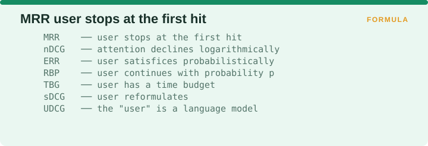
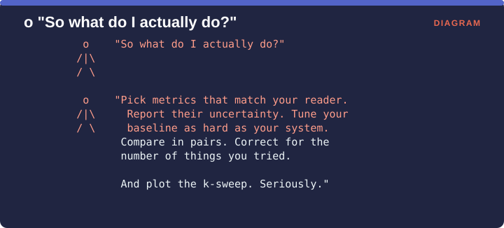

Measuring Retrieval › Volume I - Conclusion
Across nine chapters and roughly seventy metrics, five claims have earned their place.

Every metric in Volume I can be restated as an assumption about the reader. MRR assumes a user who stops at the first hit. nDCG assumes attention declining logarithmically. ERR assumes a user who satisfices probabilistically. RBP assumes a user who continues with probability p. TBG assumes a user with a time budget. sDCG assumes a user who reformulates. UDCG assumes the reader is a language model.
Choosing a metric is therefore choosing a theory of your reader. When the reader changed from a person to a language model, every classical discount became the wrong shape, and that is the entire argument of Supplement A.
RBP’s residual and the gap between MAP and bpref both exist to quantify how much your incomplete judgments could be moving your conclusions. Neither costs much to produce, and both are nearly always left out.
This is Clarke et al.’s argument and the most consequential sentence in Volume I. Measures act as objective functions that systems get optimized against, so a system will be optimized toward whatever you measure, including the things you forgot to measure. Redundancy went unmeasured, so systems produced it, and in 2026 that came to 22% of the retrieved context in a production-grade medical RAG pipeline.
Eight absolute usage metrics were tested in 2008 and none of them reliably reflected retrieval quality. Interleaved paired comparisons did. Most production dashboards are still built on the first group.
Armstrong et al. is the closing argument. The field had nDCG, it had MAP, and it had significance tests, and it still could not tell whether it was improving, because of weak baselines, multiple comparisons and reporting that did not accumulate.

Condensed into instructions: pick metrics that match your reader, report their uncertainty, tune your baseline as hard as you tune your own system, compare in pairs, correct for the number of things you tried, and plot the k-sweep from §12.3.
Three gaps this volume names honestly and does not close.
| Gap | Where it is addressed |
|---|---|
| Every classical discount assumes a human reader | Supplement A §A.4 (UDCG) |
| Nothing here measures whether the generator used the retrieval | Supplement A (Alignment) |
| Nothing here measures grounding, claims, or citations | Supplement B (Correctness) |
What Volume I does supply is the retrieval foundation that everything in the RAG chapters rests on. Practitioners who skip it tend to reinvent bpref badly and rediscover redundancy the expensive way.
Measuring Retrieval · Madhava Gaikwad · First edition, September 2026